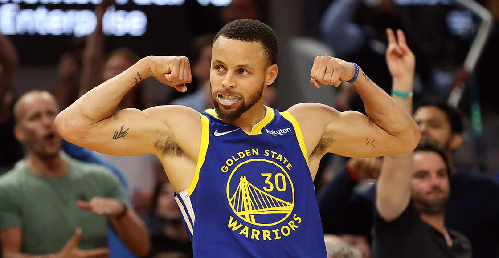

La National Basketball Association, mejor conocida por sus siglas NBA, es una liga privada de baloncesto que tiene sus inicios en Estados Unidos en 1946. Actualmente y desde 2004, se desarrolla como una de las principales ligas de baloncesto del mundo, contando con 30 franquicias.La NBA se creó en 1946, en el Hotel Commodore de Nueva York. Allí, en una reunión impulsada por los propietarios de pabellones que buscaban una liga que se disputara en las noches que tenían cerrados sus recintos, se instauraron las bases de la competición y las ciudades de la misma.
Boston, Buffalo, Chicago, Cleveland, Detroit, Indianapolis, Nueva York, Philadelphia, Pittsburgh, Providence, St. Louis, Toronto y Washington formaron la BAA (Basketball Association of America), lo que hoy en día conocemos como NBA. CÓMO FUNCIONA LA TEMPORADA REGULAR
A lo largo de siete meses, las 30 franquicias se baten en una larga temporada regular, la fase que más tiempo ocupa de cada campaña. En ella se deciden qué equipos disputan los Playoffs, qué franquicias van al play-in y el orden de elección de gran parte del Draft de la temporada siguiente, marcado en última instancia por la Lotería del Draft.
¿CUÁNTOS PARTIDOS DE LIGA REGULAR HAY?
Cada franquicia disputa un total de 82 partidos en la temporada regular de la NBA. Una cifra total a la que hay que sumar el All-Star Weekend, el fin de semana de las estrellas. Durante tres apasionantes días, los mejores jugadores compiten en el Rising Stars Challenge (partido entre las mejores jóvenes de EEUU contra los mayores promesas del resto del mundo), el Concurso de Triples, Concurso de Mates, Concurso de Habilidades, Concurso ‘Shooting Stars’ y el All-Star Game, la gran cita del fin de semana entre los mejores jugadores de la liga.
Dentro de los 82 encuentros, los equipos se enfrentan 4 veces con los equipos de su misma división, 3 o 4 veces con el resto de equipos de su conferencia y 2 veces con los equipos de la otra conferencia.
Stephen Curry la leyenda
La NBA confirma su regreso a México en 2023
17 de febrero de 2023
Se confirma la presencia de la NBA en México para la temporada 2023-2024
Después de años de especulación, la NBA finalmente ha confirmado que volverá a México para la temporada 2023-2024. Esta será la primera vez que la NBA organiza un partido fuera de los Estados Unidos y Canadá como parte de su temporada regular.
El partido se llevará a cabo en la Ciudad de México y contará con la participación de los equipos más populares de la NBA. El partido en México es parte de los esfuerzos de la NBA por expandir su marca en América Latina y aumentar su base de seguidores en la región. Además, también se espera que este partido atraiga a una gran cantidad de turistas y fans del baloncesto de toda la región.
Partido de basquetbol en México
Los aficionados mexicanos están ansiosos por ver a sus jugadores y equipos favoritos en vivo, y muchos han expresado su entusiasmo por la llegada de la NBA a México. Esta es una gran oportunidad para que los aficionados mexicanos experimenten el mejor baloncesto del mundo en su país.
Con este partido en México, la NBA busca ampliar su presencia en la región y consolidarse como el deporte más popular en América Latina. Es un paso más hacia la globalización del baloncesto y el fortalecimiento de su marca a nivel internacional.
Steph Curry: la estrella que sigue brillando en la NBA
17 de febrero de 2023
Un breve resumen de su carrera
Stephen Curry es un jugador de baloncesto profesional estadounidense, que actualmente juega en los Golden State Warriors de la NBA. Nacido el 14 de marzo de 1988 en Akron, Ohio, es hijo del exjugador de la NBA Dell Curry. Curry jugó baloncesto universitario en Davidson College, donde se destacó como uno de los mejores tiradores de la NCAA.
Después de ser seleccionado por los Golden State Warriors en la séptima posición del draft de la NBA de 2009, Curry se convirtió rápidamente en uno de los mejores jugadores de la liga. Ganó el premio al Jugador Más Valioso de la NBA en dos ocasiones, en las temporadas 2014-2015 y 2015-2016, y fue seleccionado para el All-Star Game de la NBA en seis ocasiones.
Pero lo que realmente ha hecho que Steph Curry destaque es su impresionante habilidad para anotar triples. Es el líder histórico en triples de la NBA, y actualmente está en camino de superar su propio récord de triples en una sola temporada. Además, ha liderado a los Golden State Warriors a tres campeonatos de la NBA, en las temporadas 2014-2015, 2016-2017 y 2017-2018.
El legado de Steph Curry en el baloncesto
Steph Curry ha cambiado el juego de baloncesto en la NBA. Su habilidad para anotar triples ha hecho que los equipos rivales tengan que cambiar su estrategia defensiva, y su impacto en el juego ha llevado a muchos jóvenes a querer jugar al baloncesto y a intentar emular su estilo de juego.
Además de su impacto en la cancha, Curry también ha utilizado su fama y fortuna para hacer el bien. Ha apoyado a organizaciones benéficas y ha trabajado en proyectos para ayudar a la juventud y a las comunidades necesitadas. En resumen, Steph Curry es una estrella del baloncesto que seguirá brillando por muchos años más.

Steph Curry en plena acción durante un partido de la NBA.
La evolución del básquetbol moderno
17/02/2023
El cambio del básquetbol de antaño al moderno
El básquetbol ha evolucionado significativamente desde su creación en 1891. En sus primeros años, el juego era mucho más lento, con un mayor énfasis en el juego físico y un menor enfoque en el tiro de larga distancia. La aparición de las reglas de los tres segundos y los tiros libres aumentaron la velocidad del juego y el juego físico se redujo para permitir un juego más libre y fluido.
En la era moderna del básquetbol, la evolución ha sido aún más dramática, con un enfoque mucho mayor en el juego de ritmo rápido y la estrategia de los tiros de tres puntos. La popularización del tiro de tres puntos y el énfasis en los equipos que pueden anotar desde cualquier lugar del campo han cambiado fundamentalmente el juego y la forma en que se juega.
El uso cada vez más frecuente de la tecnología en la toma de decisiones en el campo y en la capacitación también ha tenido un impacto en la forma en que se juega el juego, así como en la forma en que los jugadores y los entrenadores analizan los partidos y planifican sus estrategias.
Evolución del básquetbol moderno
Equipos de la NBA
21/11/22
Top 10 NBA
Portland trail blazers
Philadelphia 76eres
Indiana Pacers
Brooklyn nets
Utah Jazz
Phoenix Suns
Boston Celtics
La Clippers
Milwaukee Bucks
Los Angeles Laker
Son los mejores equipos hasta el momento
La lakers
Investigacion
21/11/22
1.- Los Philadelphia al primer año ya se hicieron con el primer título de la historia. Ganaron en la final a los Chicago Stags. Tras llegar en tres años a dos finales y una semifinal pasó a ser equipo de NBA. La llegada fue buena, en los mismos años, tres, llegaron a tres semifinales de conferencia que las perdieron ante Syracuse. Al año siguiente llegaron a su punto más bajo de la historia, donde tan solo llegaron a 12 victorias.
Tras tres año de bajón ganaron su primera NBA ante Fort Wayne, los actuales Detroit Pistons, con un global de 4-1. Luego ya llegaron a tres finales y dos semifinales. Hubo un año que no se clasificaron para las rondas finales. Los Boston Celtics fueron su bestia negra con tres rondas perdidas entre ellas dos semifinales.
San Francisco Warriors
Tras esta racha racha, Franklin Mieuli compró la mayor parte de la franquicia y traslado el club a la Bahía de San Francisco y además les cambió el nombre a San Francisco Warriors. Evidentemente, al cambiar de lugar, cambiaron de pabellón y el nuevo se llamaba Cow Palace.
Tras el cambio de propietario, nombre y de pabellón el año no fue bueno, no se clasificaron para la ronda final y se cuestionó si fue buena la inversión. Al año siguiente llegaron a la final, pero su bestia negra, Boston Celtics, les volvió a ganar de nuevo. Ecured
2.-Los Angeles Lakers, equipo de baloncesto de la NBA, fue fundado en 1946 y es una de las franquicias más exitosas de la historia de la liga. Al término de la temporada 2016-2017 es el segundo equipo con más victorias (3261), por detrás de los Boston Celtics, tiene el segundo mejor porcentaje victorias-derrotas (59,8%) y es el que más veces ha disputado las Finales de la NBA (en 31 ocasiones). Además, tiene en su poder 17 campeonatos, igualando de este modo a los Boston Celtics. Sus plantillas han incluido jugadores de la talla de George Mikan, Elgin Baylor, Jerry West, Wilt Chamberlain, Kareem Abdul-Jabbar, Magic Johnson (todos ellos Hall of Famers), Shaquille O'Neal, Kobe Bryant, Pau Gasol y LeBron James.
Además, poseen el récord de más partidos consecutivos ganados (33) en la historia del deporte norteamericano, llegando a estar imbatidos desde el 5 de noviembre de 1971 hasta el 7 de enero de 1972, fecha en la que perdieron ante Milwaukee Bucks.Los Lakers solo han faltado a playoffs cinco veces en su historia,y de acuerdo con la revista Forbes, son la segunda franquicia más valiosa de baloncesto en Estados Unidos, valorada en aproximadamente en 568 millones de dólares, solo superada por New York Knicks. ECURED
Brooklyn Nets. (en idioma español: Redes de Brooklyn) es un equipo profesional de baloncesto de la NBA (Deporte), el mismo reside en Brooklyn, Nueva York. Este equipo juega sus partidos como locales en el Barclays Center, fundado en 1967, pertenecen a la División Atlántico de la Conferencia Este. Fue fundado con el nombre de New Jersey Americans y comenzó jugando en la ABA. En 1968 la franquicia cambió el nombre a New York Nets. Con este nombre ingresó en la NBA en 1976, luego se mudaron a Nueva Jersey, donde se llamaron New Jersey Nets, hasta que en el año 2012 se mudaron a Brooklyn, en el estado vecino de Nueva York, y pasaron a ser denominados Brooklyn Nets. ECURED
 Nba Que significa y de que trata
Nba Que significa y de que trata
.png)